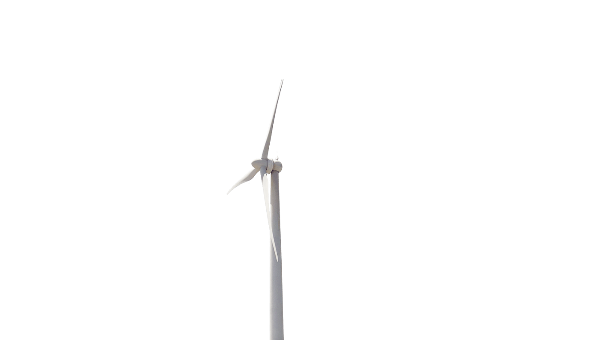
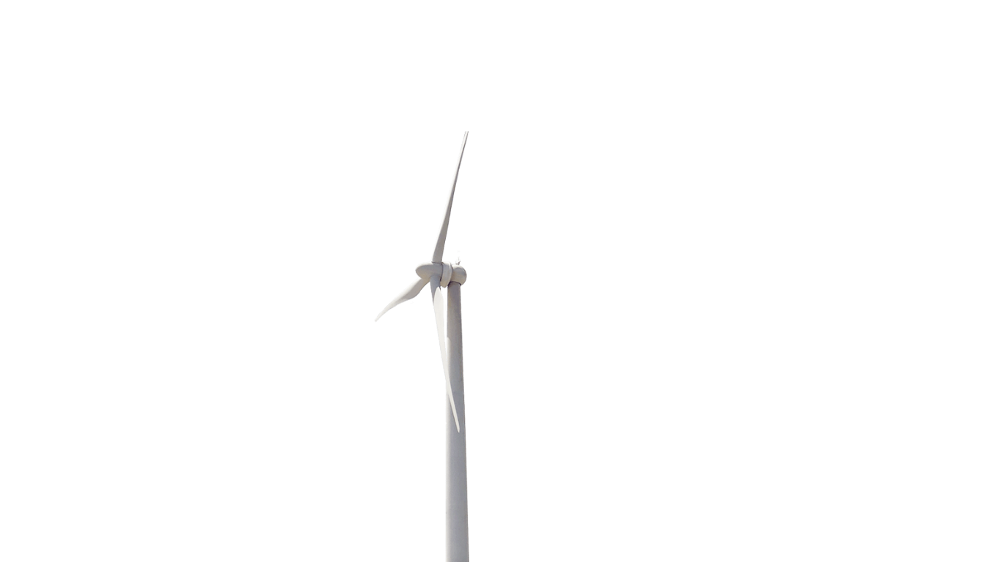
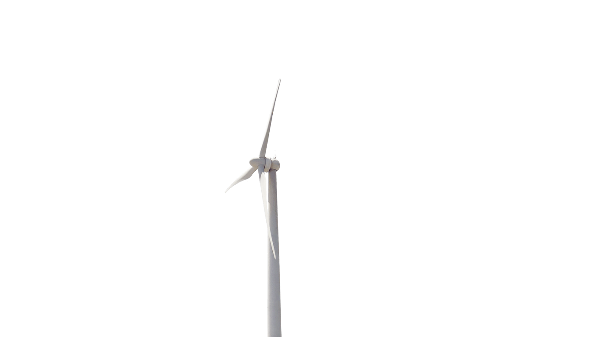
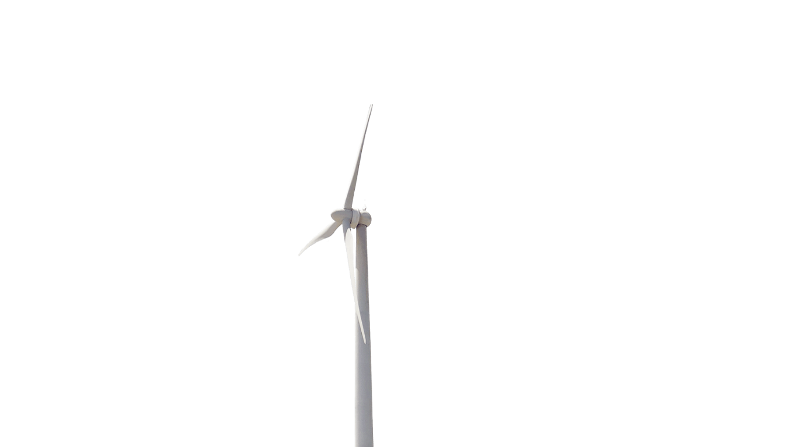

A Eco&Nordeste é uma iniciativa comprometida com o desenvolvimento de soluções sustentáveis, voltadas para o aproveitamento eficiente dos recursos naturais disponíveis no Nordeste brasileiro. Nosso foco está principalmente nas fontes de energia solar e eólica, explorando o potencial do sol e do vento para gerar energia limpa, acessível e de baixo impacto ambiental. Buscamos promover a economia verde, incentivando o uso consciente de tecnologias renováveis que beneficiem tanto as comunidades locais quanto o meio ambiente. Nossos projetos vão além da geração de energia: englobam também educação ambiental, capacitação técnica e fortalecimento de comunidades, ajudando a criar um futuro mais justo e sustentável para todos. Com uma equipe dedicada e apaixonada por inovação, a Eco&Nordeste atua para transformar o cenário energético da região, mostrando que é possível unir desenvolvimento econômico e preservação ambiental. Cada projeto é planejado com cuidado, priorizando eficiência, impacto social positivo e respeito à natureza. Nosso compromisso é claro: contribuir para um Nordeste mais sustentável, inteligente e resiliente, onde a energia limpa seja não apenas uma alternativa, mas a base de um futuro próspero para as próximas gerações.
Projetos voltados para geração de energia solar e eólica, armazenamento e integração sustentável no Nordeste.
Saiba MaisIniciativas de inovação tecnológica, hubs digitais e data centers verdes para a região.
Saiba MaisProjetos sustentáveis que valorizam a biodiversidade e fortalecem cadeias produtivas agrícolas.
Saiba MaisDesenvolvimento de portos, transporte sustentável e integração logística regional.
Saiba MaisProjetos para promover o turismo responsável, valorizando cultura e meio ambiente.
Saiba MaisSomos uma equipe apaixonada por sustentabilidade, tecnologia e inovação. Trabalhamos diariamente para promover o uso consciente e eficiente de fontes de energia limpa em comunidades e empresas de todo o Nordeste, impulsionando o desenvolvimento regional de forma responsável e inclusiva. Nosso compromisso vai além da geração de energia: buscamos inspirar uma verdadeira transformação cultural em torno da preservação ambiental e do consumo sustentável. Acreditamos que o futuro pertence às iniciativas que unem progresso econômico e equilíbrio ecológico — e é exatamente isso que move cada um dos nossos projetos. Na Eco&Nordeste, investimos em pesquisa, capacitação e parcerias estratégicas com instituições, governos e empreendedores locais, fomentando uma rede de colaboração voltada para a economia circular e a inovação verde. Nossa missão é fortalecer o potencial natural e humano do Nordeste, transformando desafios ambientais em oportunidades de crescimento sustentável. Trabalhamos com transparência, ética e compromisso social, valorizando a biodiversidade da região e o protagonismo das comunidades que nela vivem. Queremos um Nordeste mais autossuficiente, conectado e resiliente — um exemplo de como o desenvolvimento pode caminhar lado a lado com o respeito à natureza e às futuras gerações.

Instalação e manutenção de sistemas fotovoltaicos de pequeno e grande porte.

Projetos de captação de energia através dos ventos com alta eficiência e baixo impacto ambiental.
Ajudamos empresas e municípios a adotarem práticas mais sustentáveis e econômicas.
Entre em contato para saber mais sobre nossos projetos e soluções.